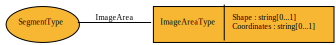

ImageAreaType¶
Defines the shape and area of an image used as part of a location representation. The shape is defined as a Rectangle, Circle, or Polygon and Coordinates provides the information required to define it.
Contents
Relationships¶

Properties¶
Shape¶
- Type
- string
- Cardinality
- 0..1
A fixed set of valid responses includes Rectangle, Circle, and Polygon.
Coordinates¶
- Type
- string
- Cardinality
- 0..1
A comma-delimited list of x,y coordinates, listed as a set of adjacent points for rectangles and polygons, and as a center-point and a radius for circles (x,y,r).